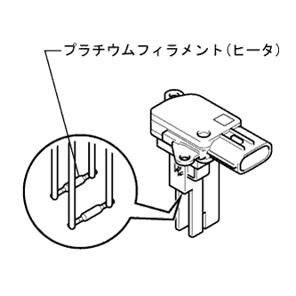
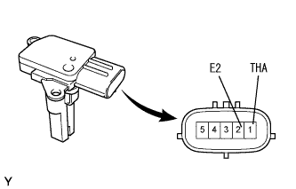

Intake Air Flow Meter Sub-assembly (2AZ-FE) Inspection |
| 1. Inspect Intake Air Flow Meter Sub-assembly |
Sensor Foreign Matter Inspection
 |
Visually check the platinum filament (heater) in the flow passage.
Intake Air Temperature Sensor Resistance Inspection
 |
Using SST (Toyota electrical tester), measure the resistance between the connector terminals.
| Tester Connection (Terminal Name) | Condition | Standard |
|---|---|---|
| 1(THA) - 2(E2) | -20°C | 13.6 to 18.4 kΩ |
| 20°C | 2.21 to 2.69 kΩ | |
| 60°C | 0.49 to 0.67 kΩ |